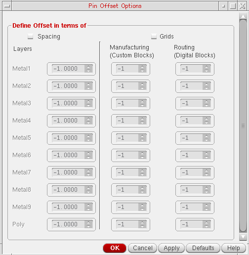

Specifying Pin Offset for Pin Optimization
Pin offset defines the first valid point for placing a pin on a grid. The pin offset value specifies the distance between the adjacent side and the center point of the first pin. Pin offset values are layer aware, which means that each layer can have a different pin offset value.
-
Choose Floorplan – Pin Optimization to display the Pin Optimization tab of the Pin Placement form.
In Layout EXL and higher tiers, choose Plan – Pin Planning – Pin Optimization. - Set Mode to All or Selected depending on whether all or some of the pins are selected in the layout.
- In the Pin Offset section, select Auto or Custom mode to define pin offset values for all layers in the current design.
-
When you select the Custom check box, the Options button is made available. Click the Options button to display the Pin Offset Options form.
Use the Pin Offset Options form to define pin offset values in terms of Spacing and Grids options. -
Choose Spacing or Grids option to specify the pin offset values for individual layers.
If the pin offset values are specified in terms of both, spacing and grids, then the grids values override the spacing values. If both, Spacing and Grids check boxes are turned off, then the Auto option is applied.If a negative pin offset value is specified, a warning for that metal and instance is displayed and the Auto offset value is used during pin optimization.If the pin offset value is specified as zero, a warning for that metal and instance is displayed and the manufacturing grid is used as the offset value during pin optimization. - Click Defaults to change the form values to the default values, which correspond to the original factory settings.
Related Topics
Return to top